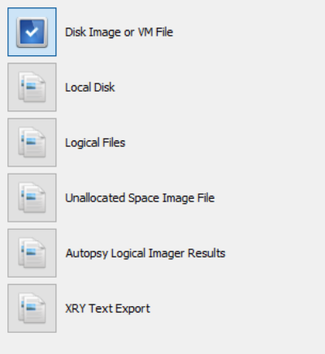
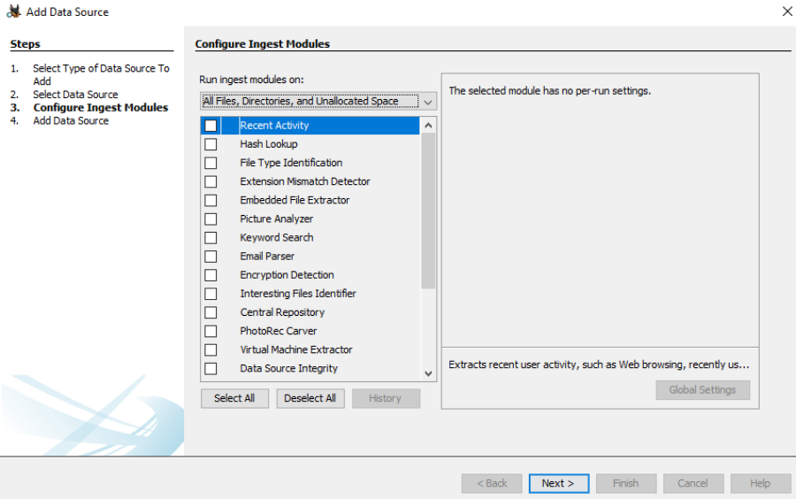
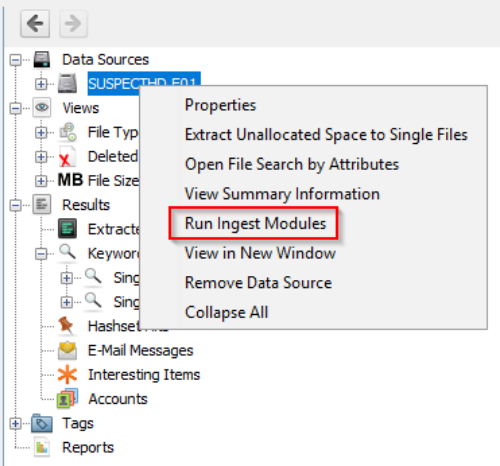

Autopsy
Autopsy is the premier open source forensics platform which is fast, easy-to-use, and capable of analyzing all types of mobile devices and digital media. Its plug-in architecture enables extensibility from community-developed or custom-built modules. Autopsy evolves to meet the needs of hundreds of thousands of professionals in law enforcement, national security, litigation support, and corporate investigation.
Before diving into Autopsy and analyzing data, there are a few steps to perform, such as identifying the data source and what Autopsy actions to perform with the data source.
Basic workflow:
1. Create the case for the data source you will investigate
2. Select the data source you wish to analyze
3. Configure the ingest modules to extract specific artifacts from the data source
4. Review the artifacts extracted by the ingest modules
5. Create the report
Data Sources:

we will focus primarily on the first option, Disk Image or VM file.
Supported Disk Image Formats:
▸Raw Single (For example: *.img, *.dd, *.raw, *.bin)
▸Raw Split (For example: *.001, *.002, *.aa, *.ab, etc)
▸EnCase (For example: *.e01, *.e02, etc)
▸Virtual Machines (For example: *.vmdk, *.vhd)
If there are multiple image files (e.i. E01, E02, E03, etc.) Autopsy only needs you to point to the first image file, and Autopsy will handle the rest.
Ingest Modules:
Essentially Ingest Modules are Autopsy plug-ins. Each Ingest Module is designed to analyze and retrieve specific data from the drive.
Below is a screenshot of the Configure Ingest Modules window.

Note: If all the Ingest Modules are deselected, and Next is selected, Autopsy will still process the data source and update the local database.
Note: Autopsy adds metadata about files to the local database, not the actual file contents.
The results of any Ingest Module you select to run against a data source will populate the Results node in the Tree view, which is the left pane of the Autopsy user interface.
Note: You can run Ingest Modules at any time while the case is open. To do so, right-click on the data source and select Run Ingest Modules.

As Ingest Modules run, alerts may appear in the Ingest Inbox.
User Interface:
Let's look at the Autopsy user interface, which is comprised of 5 primary areas:
Tree Viewer (Left pane)
Result Viewer (Top right pane)
Keyword Search (Upper Top Right)
Contents Viewer (Bottom right pane)
Status Area (Lower Bottom right)